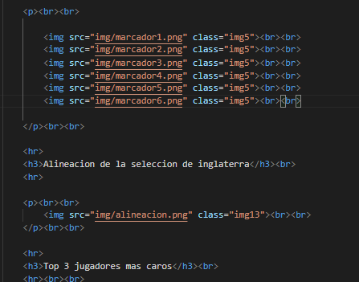
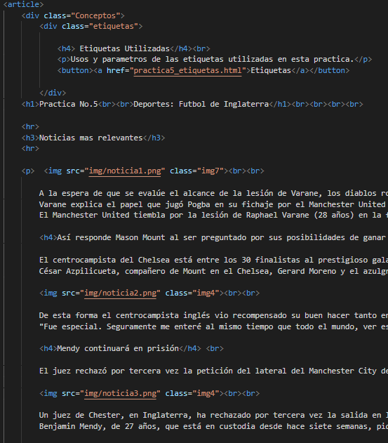

Practica No.5
Etiquetas utilizadas en esta practica
Etiqueda:"Heading"
h1: La etiqueta "h1" en nuestra pagina la usamos solo 1 vez que es para definir el tema principal.
h2: La etiqueta "h2" en nuestra pagina la usamos para definir las partes de "Menu" y "Equipo - 3M5" que esta en el header de la pagina. Ademas que tambien la utilizamos para otros subtemas que no son tan importantes y que no lo requieren.
h3: La etiqueta "h3" es la etiqueta que mas usamos, ya que con este definimos casi todos los titulos que tenemos en nuestra pagina.r
h4: La etiqueta "h4" en nuestra pagina la usamos como el h3 que esta muy presente en nuestra pagina, pero la usamos ya para temas secundarios.
h5: La etiqueta "h5" en nuestra pagina la usamos solamente por si requerimos colocar diferentes titulos y ocupamos los mismos parametros.
Codigo y Parametros utilizados
Etiqueta: "p"
La etiqueta "p" fue la etiqueta que mas utilizamos en nuestra pagina, ya que la usamos para transcribir todo el texto informativo y de informacion adivional, ademas ue tambien es la principal forma en la que estamos insertando el texto para la pagina de etiquetas, que por si sola podria ser una pagina de puras eriquetas "p".
Codigo y Parametros utilizados
Etiqueta: "img"
La etiqueta "img" al igual que la etiqueta "p" es de las qtiquetas que mas utilizamps, ya que esta es a unica forma de insertar y editar imagenes, ya sea mediante una imagen importada de un archivo guardado o un link de internet, pero en si la utilizamos para darle mas vida a la pagina y mas informacion en general.
Codigo y Parametros utilizados

Declaracion DOCTYPE
La declaracion DOCTYPE, es la parte mas necesaria de nuestra pagina web, ya que sin esta no podriamos insertar las etiquetas respectivas de esa declaracion, ya que la declaracion DOCTYPE, la utilizamos para conectar los archivos css, las distintas paginas y las etiquetas como body o main para editar por completo nuestra pagina web.
Codigo y Parametros utilizados
Etiqueta: "table"
La etiqueta table la utilizamos solamente en la parte de cambios de cada partido jugado en la liga de inglaterra, respectivamente con cambios y por que jugador y a que hora se hicieron dichos cambios, ademas que la utilizamos tambien en la parte de los 3 jugadore mas caros de la seleccion de Inglaterra, insertandole tanto texto, como imagenes para darle mas informacion a la tabla en general.
Codigo y Parametros utilizados

Etiqueta: "article"
La etiqueta article en nuestra pagina es la etiqueta que compone a todo nuestro contenido, en cuestion de la informacion de nuestra pagina, ya que el propio article lo utilizamos para el acomodo y centrado de toda la informacion de la practica, asi como el tipo de letra, color y tamaño de cada letra o titulo almacenado dentro de este article.
Codigo y Parametros utilizados

Etiqueta: "video"
La etiqueta de video solo la utilizamos 1 vez con viveo importado directamente de nuestra pagina, ya que no hacemos uso de PLUGINS o links de youtube para reproducir dicho video, el video es acerca de un partido de la seleccion de inglaterra, que es el mas reciente y importante.
Codigo y Parametros utilizados
Etiqueta: "audio"
El audio que utilizamos en nuestra pagina es un resumen de la jornada de la liga de inglaterra, esto serviria como resumen para la gente que no se mantiene al dia con el futbol, en nuestra pagina la utilizamos solo 1 vez, pero es algo muy importante como complemento informativo para nuestra pagina.
Codigo y Parametros utilizados
Etiqueta: "nav"
Esta etiqueta es de las mas importantes de nuestra pagina, ya que gracias a esta etiqueta logramos implementar un menu interactivo, que despliega todas las practicas disponibles para la visualizacion, la utilizamos solo para el apartado del menu, pero es una etiqueta que puede servir para otras cosas muy variadas y no se limita a solo un menu desplegable.
Codigo y Parametros utilizados

Etiqueta: "a"
Esta etiqueat la utilizamos demasiado nuevamente en el apartado del menu desplegable como link que te manda a las distintas practicas realizadas durante el semestre, asi como un link para esta pagina que son las etiquetas utilizadas durante esta practica, es de las etiquets mas necesarias y utiles para cualquier pagina web.